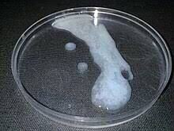
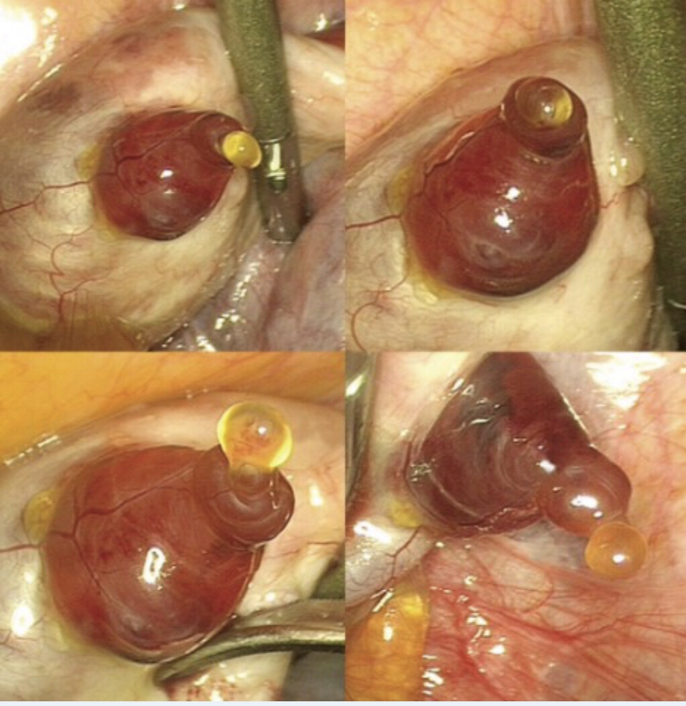
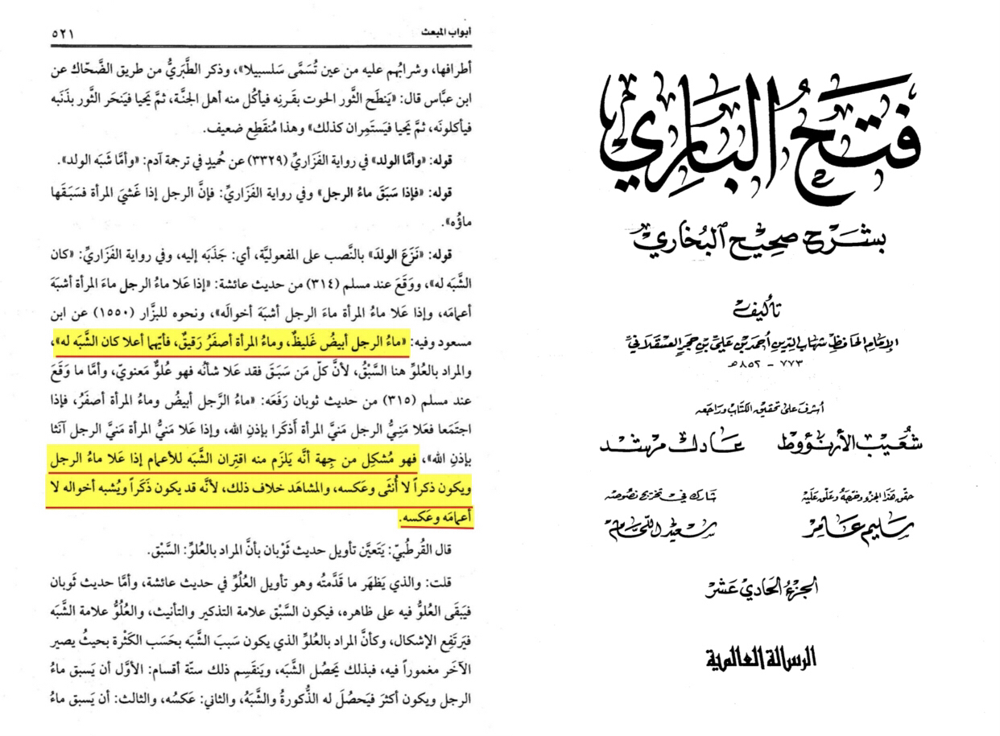
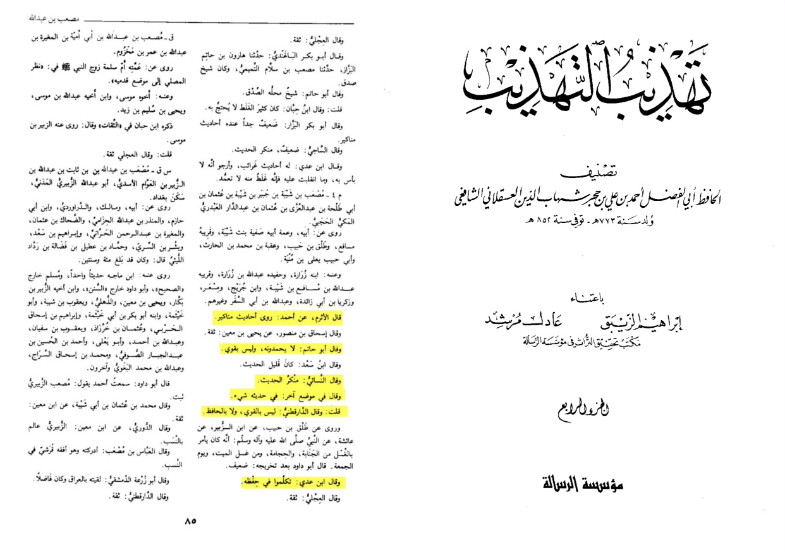
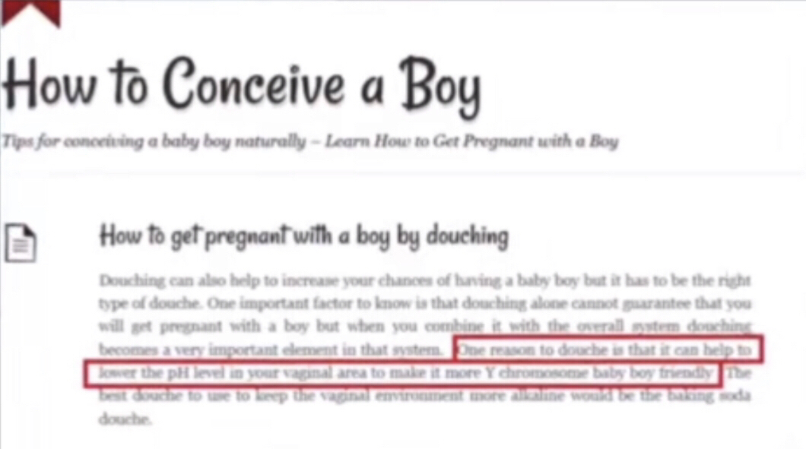
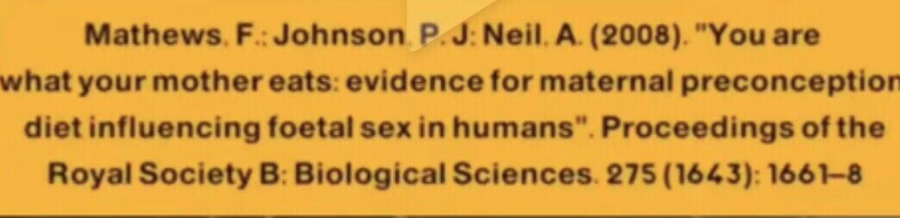
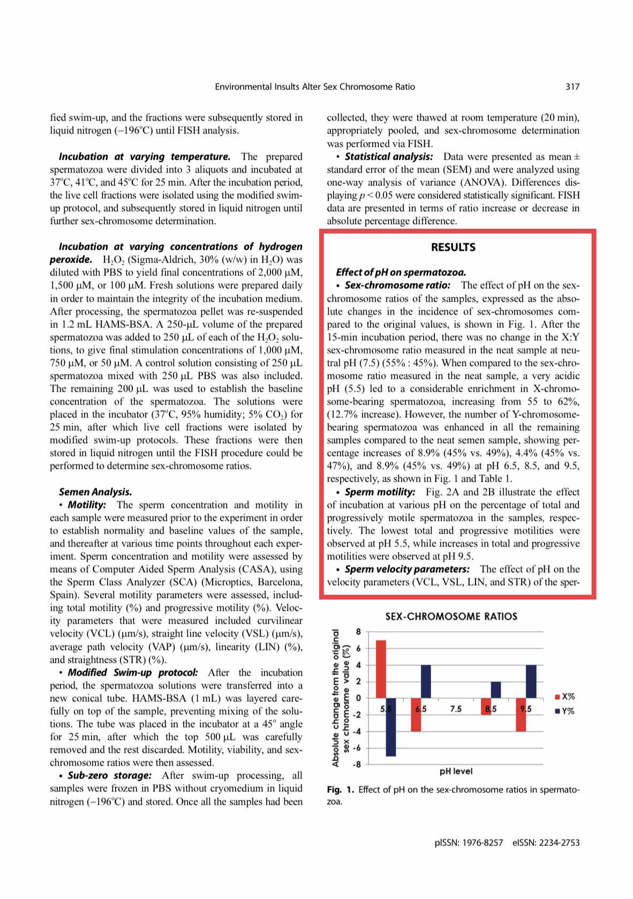

Many have tried to use this hadith in a negative way but today we are going to prove this actually proof of
prophethood
The hadith is narrated in bukhari muslim and nisa’i 200
First lets look at the explaination
About mens water and womens water
It was narrated that Anas said:
"The Messenger of Allah (ﷺ) said: 'The man's water is thick and white, and the woman's water is thin and yellow.
Whichever of them comes first, the child will resemble (that parent).'"
-Source: Sunan an-Nasa'i 200
Grade: Sahih (authentic) (Darussalam)
In the sharh it is mentioned that this is to be Sperm and females egg
So lets check the facts
The semen is thick and white ✅

The womens egg is yellow ✅

https://www.dailymail.co.uk/health/article-1025956/Pictured-The-moment-human-egg-emerged-ovary.html
https://www.sciencephoto.com/media/312389/view/colour-sem-of-human-egg-with-corona-radiata-cells
The meaning of resemblance here being male or female hence some narrations mention that
About the one being about relatives
Translation: “Ibn hajar mentions the hadith then says its problematic from the hadith of thawban (shaz [singular level])”
-📌Source: Fathul bari Sharhu Sahih al-Bukhari Abu ismael al-Bukhari (RH) of ibn hajar al-asqualani (RH) volume 11 page
number 521 explaining hadith number 3940 print of Al-Risala al-Ilmiya tahquiq Shu’ayb al-arna’ut (RH)
This hadith also has mus’ab bin shaybah in the isnad who has been criticized for his memory by many scholars so this is an
addition by him
-Source: Tahzih al-Tahzib


So the narration is problematic and this wording is problematic
He (the Holy Prophet) said: The reproductive substance of man is white and that of woman (i. e. ovum central portion) yellow,
and when they have sexual intercourse and the male's substance (chromosomes and genes) prevails upon the female's substance
(chromosomes and genes), it is the male child that is created by Allah's Decree, and when the substance of the female prevails
upon the substance contributed by the male, a female child is formed by the Decree of Allah.
-Source: Sahih Muslim 315 a
Grade: Sahih (authentic) according to the conditions of Bukhari and Muslim
So when the sperms importance is more important then the importance of the egg it is a boy and the contrary for a female as
was explained by ibn hajar
Now does this alie with science absolutely yes!
Objective: The World Health Organization laboratory manual, last revised in 1992, states that the normal pH of semen ranges
from 7.2 to 8.0.
https://pubmed.ncbi.nlm.nih.gov/10819822/
The naturally neutral pH is equal to 7, but the normal vaginal pH ranges between 3.8 and 5.0, which is moderately acidic [2]
https://www.ncbi.nlm.nih.gov/pmc/articles/PMC8618584/
Well when there is more spermatoza chromosomes the space would be more basic in level of ph as we mentioned the ph level of
the male chromosome is 7.2-8.0 so basic hence would make the oocyte choose and XY chromosome and the contrary for female


https://www.researchgate.net/publication/320419974_
Environmental_Exposure_of_Sperm_Sex-Chromosomes_A_Gender_Selection_Technique/fulltext/59e4c9050f7e9b97fbf091cd/
Environmental-Exposure-of-Sperm-Sex-Chromosomes-A-Gender-Selection-Technique.pdf?origin=publication_detail

The type of effect is different it can be affect on the speed of the sperms or the announcement process which is the process to win the egg selecting the spell which one will be selected more favorably that's why I said there's lots of things we need to look at at the topic and even scientists themselves are disagreeing with it also you know the study that says that they tried it on sperm of the rabbits and it worked in different way so the mechanism is not yet fully understood